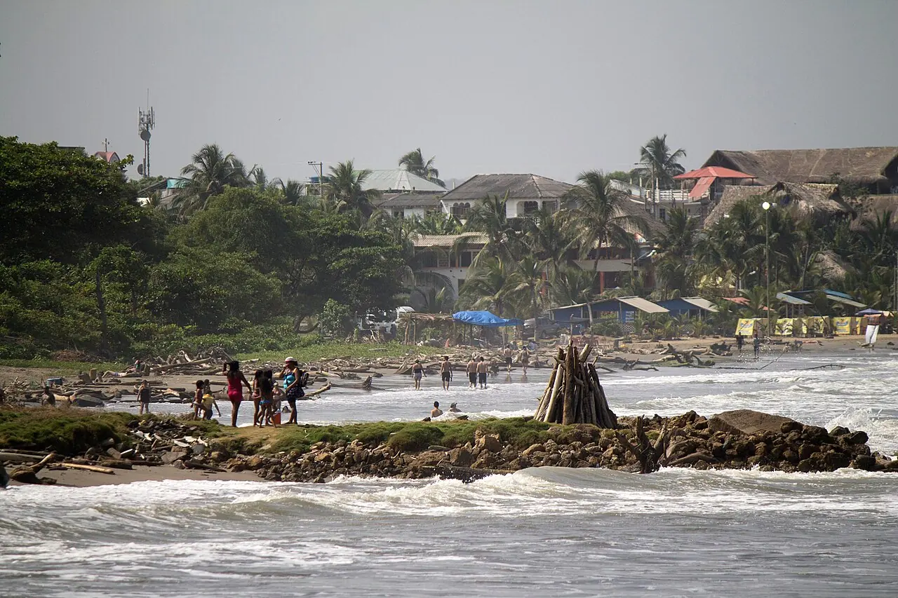
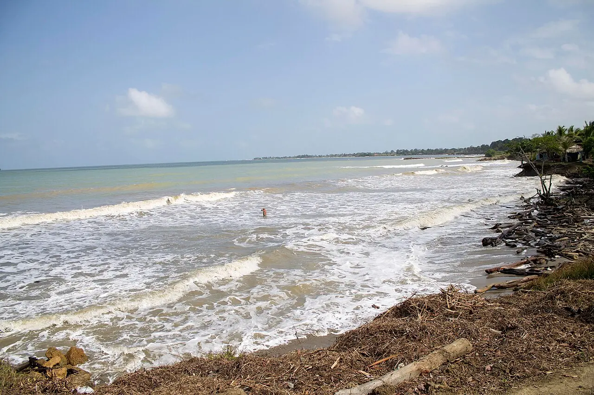

Mud volcano
Check visiting conditions with the operators.
Find on the map ↗Urabá · Antioquia, Colombia
The Caribbean coast and a mud volcano reveal another side of Antioquia.
What to see ↓Discover its history ↓
Do you have a business in Arboletes? Leave your details to take part →
Discover the destination
Life in Arboletes brings together Caribbean and Antioquian traditions. Cattle farming, fishing and tourism accompany the story of a coastal municipality known for its beaches and mud volcano.

Ideas for your visit
Choose the places that spark your curiosity and plan your route at your own pace.
Check visiting conditions with the operators.
Find on the map ↗
02Explore the coast and check sea conditions.
Find on the map ↗Another coastal landscape in the municipality.
Find on the map ↗Connect the parts of your trip
Find how to get around, where to stay and eat, things to do and the services you need. Explore at your own pace.
There are no places published in this directory yet.
Locate the places you want to visit and check their opening hours, entry conditions and accessibility before planning your route.
Find Arboletes on the map ↗There are no upcoming events published.
Organising an event? Let’s talk →Join Explorando Lugares
Be part of it.
Whether you run a hotel, restaurant, bar or shop, provide transport or organise tours and activities, we would like to hear about your business.
Leave your contact details. We will get in touch to discuss featuring your business on the portal.
I want to take part →